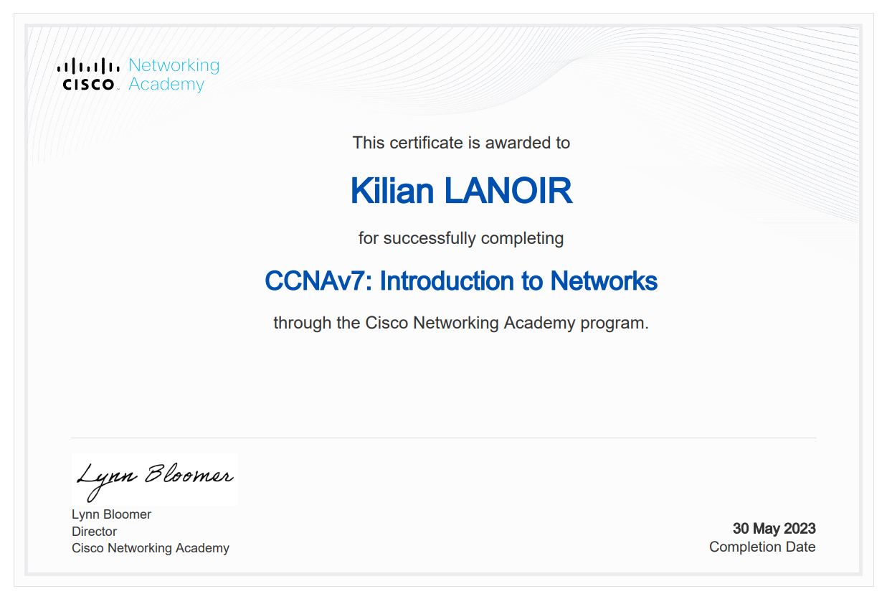
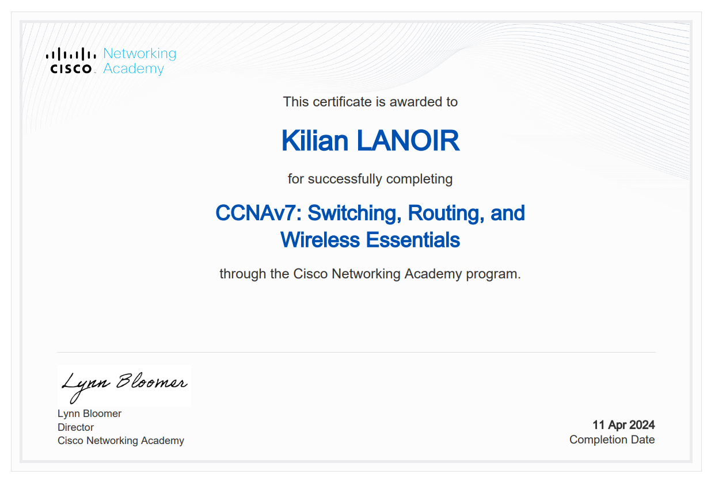
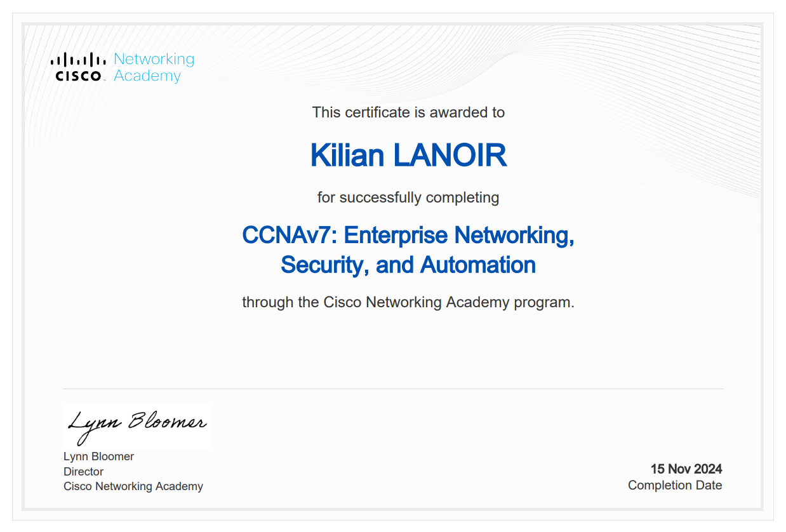
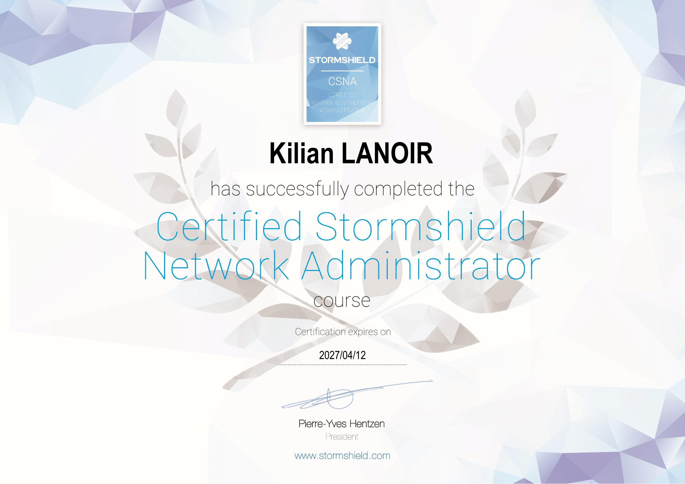
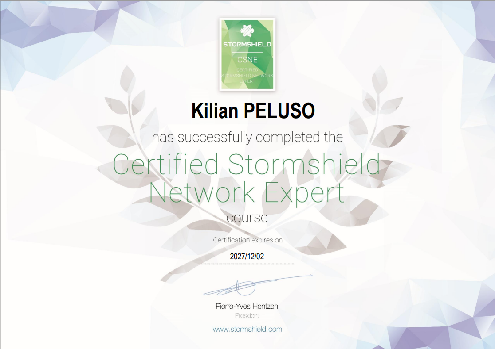
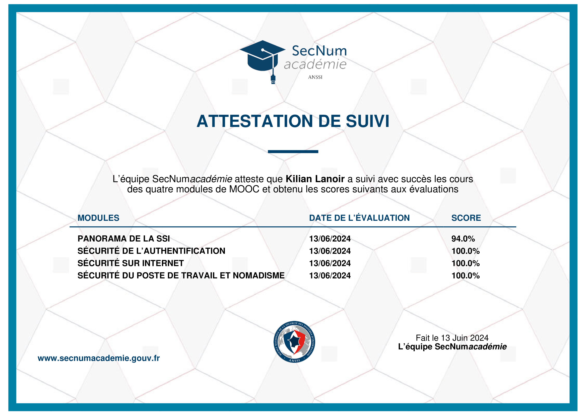

SQL
 MySQL
MySQL
 MariaDB
MariaDB

Mon Profil
Étudiant Réseau
Fortement passionné par l’informatique et animé par un intérêt profond pour la technologie, j’ai orienté mon parcours vers un BUT Réseaux et Télécommunications, spécialité Cybersécurité. Mon objectif est d’intégrer les forces armées en tant que Spécialiste Réseaux & Cybersécurité. Je souhaite ainsi mettre mes compétences au service de la défense des systèmes d’information et contribuer activement à la sécurité des infrastructures stratégiques.
Mon Parcours
-
Animateur BAFA
Titulaire du BAFA, j'ai exercé le métier d'animateur en centre aéré durant les vacances scolaires pendant plusieurs années. Mon rôle était d'encadrer et d'animer un groupe de mineurs, de concevoir des activités variées et de veiller à leur sécurité. J'assurais également la communication avec les parents pour les tenir informés du programme et du déroulement des activités.
Décembre 2021 - Juillet 2024 -
Baccalauréat Section Euro Italien - Lycée Simone Veil
J'ai obtenu mon Baccalauréat Section Euro italien, avec les spécialités Mathématiques et NSI. En complément, j'ai également choisi l'option Mathématiques expertes, ajoutant 3 heures de mathématiques par semaine, ainsi que l'option Section Euro Italien, comprenant 2 heures de cours supplémentaires et des activités sportives en italien.
Juin 2022 -
BUT Réseau et Télécommunications Parcours Cybersécurité
Durant mon BUT en Réseaux et Télécommunications Parcours Cybersécurité, j'ai acquis des compétences et des connaissances approfondies en conception, sécurisation et protection des réseaux informatiques. J'ai développé des compétences solides en systèmes, programmation réseau et cybersécurité. La formation incluait des projets en groupe, des stages et une alternance, offrant une expérience professionnelle complète.
Septembre 2022 - Septembre 2025 -
Stage Responsable Informatique - Clinique de Bonnevine
J'ai réalisé un stage en informatique à la Clinique de Bonnevine à Marseille. Mon rôle était de développer une solution iTop, un outil de gestion des services informatiques (ITSM) pour améliorer la gestion des incidents et des demandes. J'ai également participé à divers projets et résolu des problèmes informatiques liés à la clinique (réseau, logiciel ...).
15 Avril 2024 - 21 Juin 2024 -
Alternance Réseau et Système - iQuanto
J’ai réalisé une alternance chez SNEF - iQanto, où j’étais en charge de la gestion des infrastructures réseau et de l’administration des systèmes informatiques. Mes missions consistaient à installer, configurer et assurer la maintenance des serveurs, ainsi qu’à intervenir en support technique pour la résolution d’incidents réseau, systèmes et matériels. J’ai également rédigé de la documentation technique sur les procédures réseau et système, et assuré la gestion du stock de matériel informatique.
Septembre 2024 - Septembre 2025
Mes Compétences
Réseaux
Administration réseaux, VLAN, routage statique/dynamique, sécurité (firewalls, VPN, cryptographie), protocoles TCP/IP.
En Savoir PlusProgrammation
Algorithmique, programmation en Python, développement web (HTML, CSS, JavaScript), et gestion des bases de données.
En Savoir PlusSystèmes
Administration des systèmes, virtualisation, gestion des utilisateurs et sécurité des systèmes d'exploitation.
En Savoir PlusCybersécurité
Sécurisation des réseaux, cryptographie, Pentesting, et sécurisation des serveurs web comme Apache
En Savoir PlusOutils
Mes Projets

Mes Diplomes & Certifications






